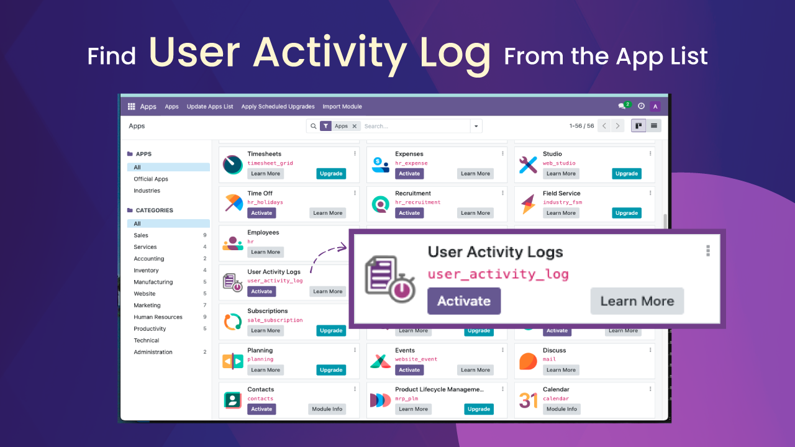
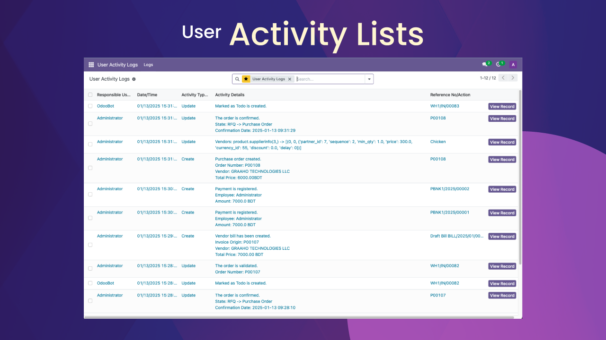
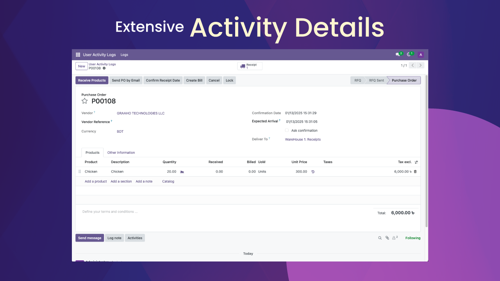
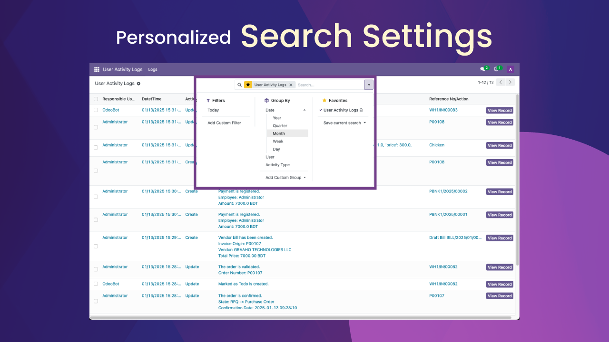

Activate User Activity Logs
The User Activity Logs provides a comprehensive overview of all user actions, including created, updated, and deleted records across modules. It offers precise timestamps and detailed descriptions, making it easier to monitor user activity and changes in data effectively.

Activity List Page
The main page provides an overview of all user activities in the system, including Reference No/Action, Date/Time, Activity Type, and Responsible User. A "Details" button enables quick access to specific logs.

Main Records Page
The main records page provides a comprehensive overview of all user activities, displaying key details such as the type of action performed, associated models, and timestamps. This layout ensures easy navigation and quick insights into system interactions.

Filter Options
Use dynamic filters to sort and group data effortlessly. Filter logs by date, user, activity type, and more. Save your preferences as favorites for quick access.
